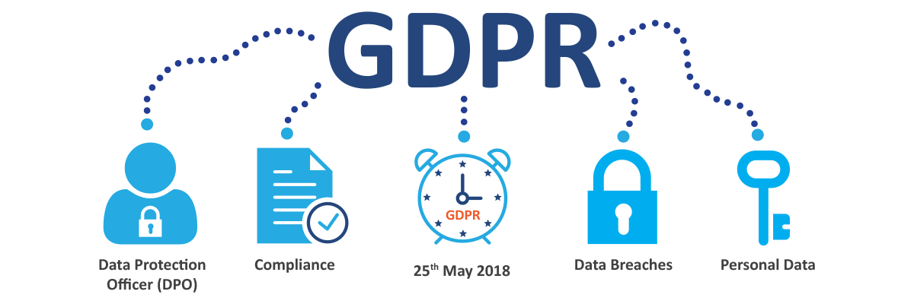

How does GDPR impact digital projects
GDPR
otherwise known as The General Data Protection Regulation
is a new regulation that provides citizens of the EU
with greater control over their personal data and
assurances that their information is being securely protected across Europe,
regardless of whether the data processing takes place in the EU or not.
Whether you're a five-person business
or a five-hundred-person company,
your business will have to be GDPR compliant
by May 25th, 2018.
And don't think that you can let it slip by.
The fine for non-compliance is huge.
It can go as high as 20 million Euros
or 4% of your global revenue,
whichever is bigger!
GDPR has come about because of the internet
and how it's become such an integral part of everyday lives.
We all surf the internet,
share posts or purchase something online,
activities which create a digital trace.
These digital traces help companies to serve us better.
At the same time,
there are also companies that profit from collecting this kind of information.
GDPR ensures that we have the power over our own data,
who can use it and for what purpose.
The regulation contains 8 rights
that all businesses must comply with:
1. ✎ The right to be informed –
All organisations must be completely transparent in
how they are using personal data (personal data may
include data such as a work email and work mobile if
they are specific to an individual).
2. ✎ The right of access -
Individuals will have the right to know exactly what information is held
about them and how it is processed.
3. ✎ The right of rectification -
Individuals will be entitled to have personal
data rectified if it is inaccurate or incomplete.
4. ✎ The right to erasure -
Also known as 'the right to be forgotten', this
refers to an individual's right to having their personal data deleted or removed
without the need for a specific reason as to why they wish to discontinue.
5. ✎ The right to restrict processing -
An individual's right to block or suppress
processing of their personal data.
6. ✎ The right to data portability -
This allows individuals to retain and reuse
their personal data for their own purpose.
7. ✎ The right to object -
In certain circumstances, individuals are entitled to
object to their personal data being used. This includes, if a company uses personal
data for the purpose of direct marketing, scientific and historical research, or
or the performance of a task in the public interest.
8. ✎ Rights of automated decision making and profiling -
The GDPR has put in place
safeguards to protect individuals against the risk that a potentially damaging
decision is made without human intervention. For example, individuals can choose
not to be the subject of a decision where the consequence has a legal bearing on
them, or is based on automated processing.
These rights have everything to do with privacy.
As a company you will have to understand the legal aspects of the regulation
and how it applies to your business.
You will also have to have systems in place
in order to meet the privacy rights. These systems will help you to
protect and manage personal data
